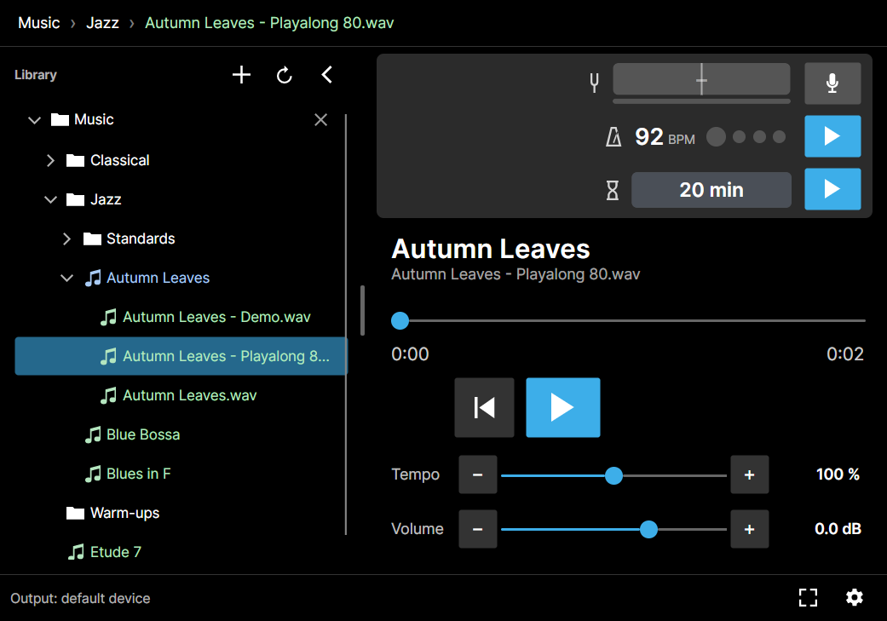

Practise with your own recordings
A free desktop app for musicians: open your music folders, slow a track down or speed it up without changing the pitch, keep time with a metronome, tune your instrument and time your practice. Works offline, no account, no ads.
Version {{version}} for 64-bit PCs (x64) · How to install · All versions and checksums

What it does
Your music folders
Pick one or more folders and expand them right in the library. Files that belong together, such as a demo and a playalong of the same song, show up as one piece. The library opens the way you left it, with the last file loaded.
Player
- MP3, WAV, FLAC and OGG
- Tempo from 50 % to 150 %, the pitch stays the same
- Volume control and a progress bar to jump to any point
- Tempo and volume are remembered for each file
Metronome
- 30 to 250 BPM
- 1 to 16 beats per bar, the first accented
- Tempo presets 60, 90 and 120
- Shows the current beat
- Its own volume, independent of the player
Tuner
- Chromatic: a bar shows if you are sharp or flat, green when you are in tune
- Transposition C, B♭, E♭, F and A, concert pitch 415 to 466 Hz
- A thin bar shows the input level
- The microphone is only open while the tuner is switched on
Practice timer
- 1 to 60 minutes, presets from 5 to 30
- Empties smoothly like an hourglass, in calm colors
- Never makes a sound
- Lengthen or shorten it while it runs
Made for practising
- Large buttons and text, usable by touch and readable from your music stand
- Full screen (F11); the screen stays on while you practise
- Keyboard shortcuts for the player, the metronome, the timer and the tuner
- English and German
- Looks for updates only when you ask it to
Free and open source
just practise is free and stays free: no costs, no ads, no account and no tracking. The source code is on GitHub under the MIT license. Found a bug or missing something? Open an issue.